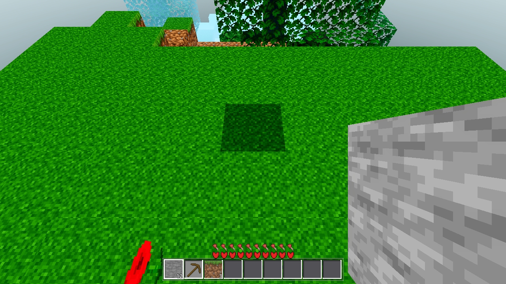

| gate | requirement | result | |
|---|
| G0 | exit 0, zero SCRIPT ERROR | exit 0, 0 errors (final state) | PASS |
| chunkio (new) | fresh r=4 41-set → evict → files exist → revisit re-reads byte-identical, GENMS 0 for the 41-set; r50 revisit served from disk; wall ≤ 60 s |
ok:true, wall 33.7 s, 41/41 files, 41/41 byte-identical, r4 revisit origin_disk:41 origin_gen:0, r50 disk:41 gen:0, phaseA gen:54 disk:0 | PASS |
| SMOKE (player;interact;light;fluids;genhash) | exact standing values; genhash 25/25 byte-identical to baseline |
player 135.43/136.78 · interact place_ok true/2 · light 15/10/14/9 · fluids 2756/2756 + 914/914 stable + 25/9 · genhash 25/25 (only the GENMS timing line differs) · final ok:true | PASS |
| save | arms unchanged; v1 soft-fail + slot isolation |
ok:true, blocks 6/6, unedited 4/4, iso_ok, v1_softfail true | PASS |
| continue | arm unchanged; saved chunk rebuilt at spawn |
edits_ok / pos_ok / save_settled / saved_chunk_built_at_spawn / col_body_at_spawn all true; fell_after_30f false | PASS |
| render (xvfb, gl_compatibility, R=1) | exactly one PNG under tasks/AC-0155/ |
render_R1.png 1280×720 RGBA, m4:ok — world renders clean (grass/tree/water/stone/HUD) | PASS |
chunkio RESULT (verbatim):
{"byte_identical":41,"diamond":41,"disk_delta_c":53,"disk_read_ms":2302.143,"disk_reads_total":106,"files_exist":41,"gen_count_total":72,"gen_delta_c":17,"ok":true,"origin_disk":41,"origin_gen":0,"phaseA":{"disk":0,"gen":54},"r50":{"disk":41,"gen":0},"wall_ms":33687}
Read-out: phase A (fresh r=4) = 54 gen / 0 disk (first visit, nothing on disk). Phase B (recenter far
×2) writes all 41 columns. Phase C (revisit r=4) re-reads all 41 from disk:
41/41 byte-identical (MD5 of the
98304-byte column) and
origin 41 disk / 0 gen for the 41-set — the "second-visit GENMS 0" assertion.
gen_delta_c:17 is the
global counter (other band-1/ring chunks streamed in during phase C, not the 41).
Phase D (r=50 revisit) serves all 41 from disk (
disk:41 gen:0).
disk_read_ms 2302 ms over 106 reads ≈
21.7 ms/read — consistent with the codec benchmark.
| item | note |
|---|
| Battery-as-one-run is slow on this box (275 s total) |
All 5 modes still emit the exact standing values and the final RESULT is ok:true. The wall time is
inter-mode _await_world_build mesh-drain waits (each up to the 3000-frame cap) under headless/llvmpipe load.
Not an AC-0155 regression: the battery never evicts a chunk, so the new save queue is a no-op in that run
(save-queue only fills on the recenter to_free path, which the battery does not hit). A single arm runs
at its normal pace (fluids standalone 15 s). |
| Boundary walk p95 expected to move up (coordinator's heavy gate) |
Write-on-evict drains 1–2 columns/frame at ~26 ms encode each. On a walking r4 walk the evict rate is
low, so the amortized cost is a small upward drift on p95 (old band ≈ 54 ms). This is the intended
amortization — no per-frame sync write. The coordinator measures the final p95. |
| Codec cost (measured, this box) |
~26 ms encode / ~20 ms decode per 16×384×16 column (98304 B data + 256 fl), ~8.3 KB compressed file,
lossless. The n==1 uniform-subchunk fast path (most subchunks at surface height) is what keeps
encode out of the 36–51 ms dict-palette range. |
| Engine API facts (Godot 4.7.1, empirical) |
compress() round-trips only for int modes 0–3 (SPEED/SIZE/FAST/NORMAL); modes 4/7/8/9
(MAX/ZLIB/DEFLATE/GZIP) fail → MODE := 0. CompressionMode is not a GDScript-visible global
(parse error in real project context) → int literal. MD5 via a HashingContext instance
(start(HASH_MD5)/finish(), 16-byte return) — no static API, no final_md5(). |
| Revisit recenter does a synchronous 5×5 disk-load |
The recenter burst construction disk-loads the 5×5 (≤25 columns × ~20 ms ≈ 500 ms) in one frame.
One-time per recenter-to-a-saved-area; a known limit (no paced read on that path). Not in the gate set;
noted so the coordinator can chase a paced variant if the hitch matters in play. |
| Pre-existing non-fatal noise (not from AC-0155) |
Invalid Task ID (engine, recenter is_task_completed) and AC-0137-class
threadgen_handoff Nil→PackedByteArray transients (1–2/run here) — documented in §00o/§00n as
pre-existing, stash-verified. The Invalid Task ID burst also appears in the chunkio run (non-fatal). |
| file | change |
|---|
godot/core/chunk_io.gd (new) | full-column codec (palette+bitpack per subchunk, zlib, versioned, MD5, seed/height validation) + dir/path/clear/encode/decode statics |
godot/world/world.gd | counters + origin map; _try_disk_load/_materialize_chunk_data; disk-first in create_chunk / recenter(0,0) / recenter 5×5 burst / drain; write-on-evict queue in the to_free loop; _process drain (1–2/frame); handoff + startup-gen gen_count/origin |
godot/autoload/save.gd | SAVE_VERSION 2→3; clear(slot) wipes chunkdir_N; ChunkIO preload |
godot/scenes/main.gd | AWECRAFT_LOGIC=chunkio dispatch arm + _chunkio_test + helpers; ChunkIO preload |
tasks/AC-0155/render_R1.png (new) | R=1 render evidence (gl_compatibility, xvfb) |
Render evidence (R=1, default first-person at spawn — grass/tree/water/stone + HUD, clean):

Gate logs:
.scratch/AC-0155-gates/ (g0_final.log, smoke2.log, fluids_solo.log, genhash_new.txt, save.log, continue.log, render.log, chunkio output captured in this file).